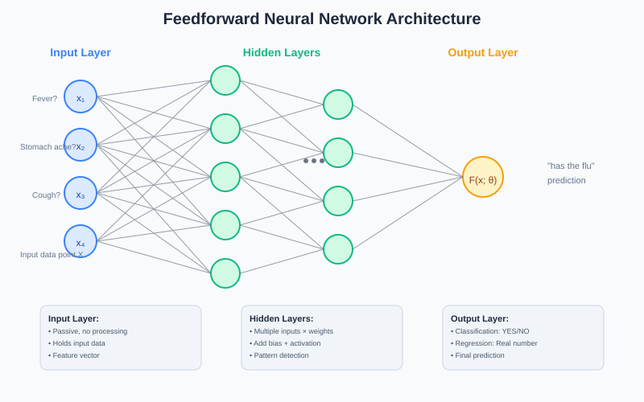
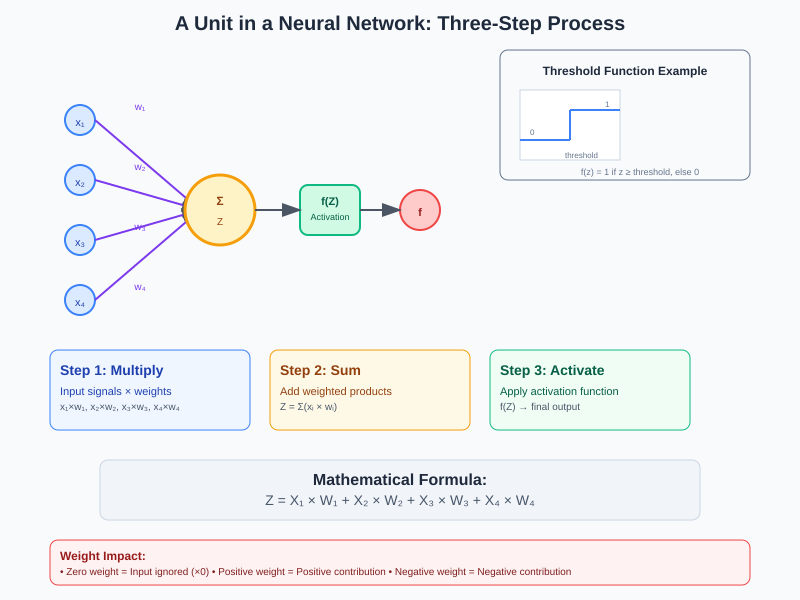
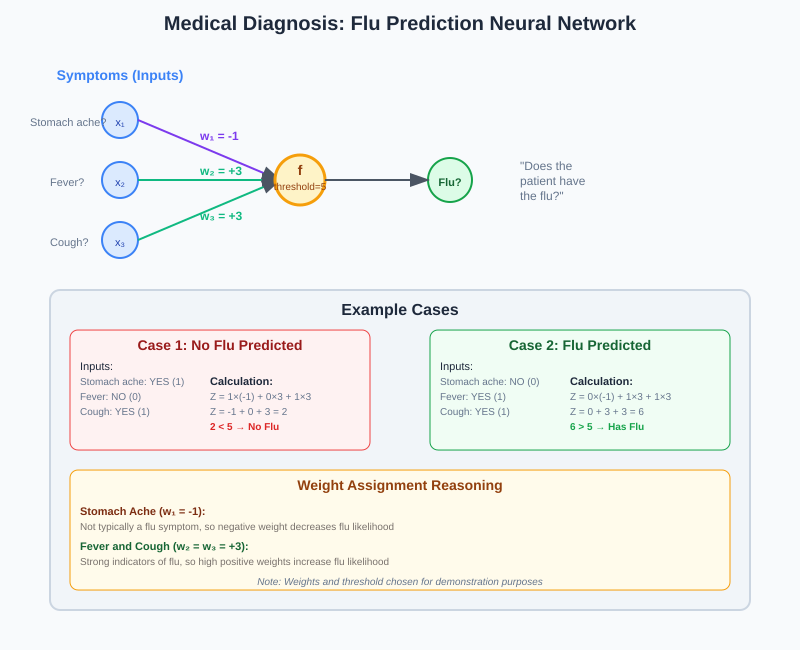
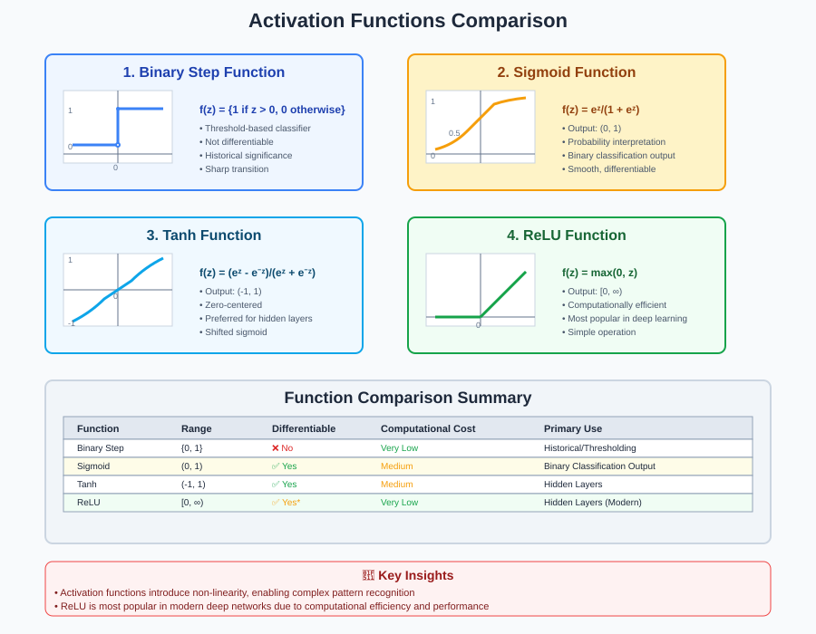
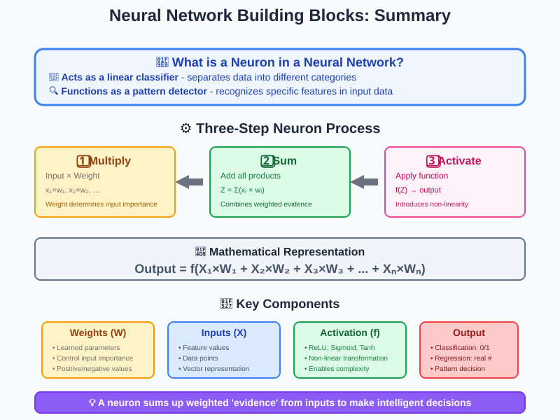

Building Blocks of Neural Networks
A comprehensive guide to understanding the fundamental components and operations of feedforward neural networks, including neuron operations, activation functions, and practical examples.
📋 Quick Navigation
- 🏗️ Feedforward Neural Networks
- 🔧 A Unit in a Neural Network
- 🩺 Practical Example: Medical Diagnosis
- ⚡ Activation Functions
- 📊 Function Comparison
- 🔗 References & Further Reading
🏗️ Feedforward Neural Networks
Feedforward neural networks are the foundation of deep learning, consisting of multiple layers that process information in a forward direction from input to output.

Network Components
Input Layer - Passive component that holds input data - Acts as a vector describing input features - No processing occurs at this layer - Simply supplies data to the first hidden layer
Hidden Layers - Layers between input and output layers - Each neuron takes all input attributes - Applies weights, adds bias, and transforms using nonlinear functions - Weights are randomly initialized for each neuron - Multiple hidden layers enable complex pattern recognition
Output Layer - Receives output from hidden layer neurons - For classification: Binary output (YES/NO) - For regression: Real number output - Final prediction layer of the network
Mathematical Foundation
Each neuron computes a weighted sum of inputs:
Where: - \(X_i\) = Input values - \(W_i\) = Corresponding weights - \(Z\) = Weighted sum (pre-activation)
🔧 A Unit in a Neural Network
Understanding how individual neurons process information is crucial for grasping neural network mechanics.

Three-Step Neuron Operation
- Multiplication: Input signals × corresponding weights
- Summation: Add all weighted products together
- Activation: Apply activation function to weighted sum
Weight Impact
- Zero weights: Input is completely ignored (multiplied by zero)
- Positive weights: Input contributes positively to activation
- Negative weights: Input contributes negatively to activation
Linear Classifier Analogy
Each neuron functions as a linear classifier: - Computes weighted combination of inputs - Compares result against threshold - Multiple neurons detect different patterns - Each neuron has unique weight parameters
🩺 Practical Example: Medical Diagnosis
Let's examine a flu diagnosis system using three symptoms as inputs.

Input Features
- X₁: Stomach ache (1 = Yes, 0 = No)
- X₂: Fever (1 = Yes, 0 = No)
- X₃: Cough (1 = Yes, 0 = No)
Weight Assignment Strategy
- Stomach ache: Weight = -1 (not typical flu symptom)
- Fever: Weight = 3 (strong flu indicator)
- Cough: Weight = 3 (strong flu indicator)
- Threshold: 5
Example Calculations
Case 1: Stomach ache = Yes, Fever = No, Cough = Yes
Since \(Z = 2 < 5\) (threshold), Prediction: No Flu
Case 2: Stomach ache = No, Fever = Yes, Cough = Yes
Since \(Z = 6 > 5\) (threshold), Prediction: Has Flu
⚡ Activation Functions
Activation functions introduce non-linearity, enabling neural networks to solve complex problems beyond linear classification.

Why Activation Functions Matter
Critical Role: - Introduce non-linearity into neuron output - Enable complex pattern recognition - Without activation functions, entire network becomes single linear transformation - Allow networks to approximate any continuous function
Function Types
1. Binary Step Function (Threshold)
Characteristics: - Basic threshold-based classifier - Sharp transition at threshold point - Not differentiable (problematic for training) - Historical significance in early neural networks
2. Sigmoid Function
Applications: - Most common for binary classification output layers - Smooth output between 0 and 1 - Interpretable as probability - Prediction: 1 if output > 0.5, else 0
3. Tanh (Hyperbolic Tangent)
Advantages: - Output range: -1 to 1 - Zero-centered (unlike Sigmoid) - Preferred over Sigmoid for hidden layers - Mathematically shifted version of Sigmoid
4. ReLU (Rectified Linear Unit)
Benefits: - Most widely used in modern deep learning - Computationally efficient - Simple mathematical operation - Range: 0 to ∞ - Reduces vanishing gradient problem
📊 Function Comparison
| Activation Function | Range | Differentiable | Computational Cost | Primary Use |
|---|---|---|---|---|
| Binary Step | {0, 1} | ❌ No | Very Low | Historical/Thresholding |
| Sigmoid | (0, 1) | ✅ Yes | Medium | Binary Classification Output |
| Tanh | (-1, 1) | ✅ Yes | Medium | Hidden Layers |
| ReLU | [0, ∞) | ✅ Yes* | Very Low | Hidden Layers (Modern) |
*ReLU is not differentiable at z=0, but this is handled in practice.
Selection Guidelines
Choose Sigmoid when: - Binary classification problems - Need probability interpretation - Output layer requirements
Choose Tanh when: - Hidden layers in smaller networks - Need zero-centered outputs - Replacing sigmoid in hidden layers
Choose ReLU when: - Deep networks (most common) - Computational efficiency is critical - Modern architectures (CNNs, etc.)

Key Takeaways
A single neuron in a neural network:
- 🎯 Acts as a linear classifier
- 🔍 Functions as a pattern detector
- ⚖️ Sums weighted evidence from inputs
🔗 References & Further Reading
📚 Foundational Resources
- Deep Learning by Ian Goodfellow - Comprehensive mathematical foundation
- Neural Networks and Deep Learning - Intuitive explanations with code
- CS231n: Convolutional Neural Networks - Stanford's excellent course materials
🎓 Interactive Learning
- Neural Network Playground - Visualize neural network behavior
- Distill.pub Neural Networks - Beautiful visual explanations
- 3Blue1Brown Neural Networks - Outstanding video series
📖 Advanced Topics
- Activation Functions Survey Paper - Comprehensive analysis of activation functions
- Understanding Deep Learning - Modern textbook with practical insights
🛠️ Practical Implementation
- PyTorch Tutorials - Hands-on neural network implementation
- TensorFlow Neural Network Guide - End-to-end development guide
- Hugging Face Transformers - State-of-the-art pre-trained models
📝 Note: This documentation covers fundamental concepts. Advanced topics like backpropagation, optimization algorithms, and regularization techniques build upon these foundations.